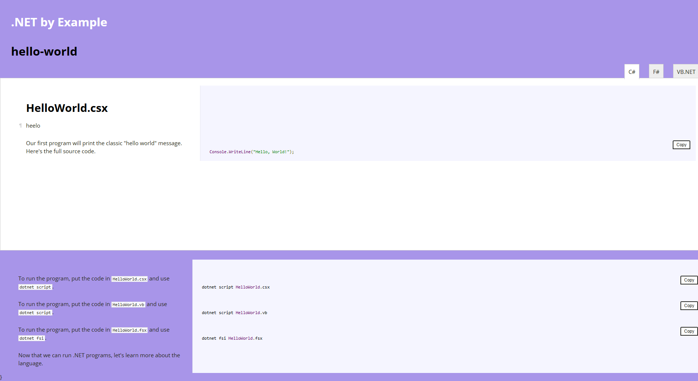

In this post I will explain how I built .NET by Example, a clone of Go by Example, using the updated nocco tool I've recently been working on.
I've modified the code a little to take a list of files: .cs, .vb, .fs, in a folder, with a .bat to explain how to run the provided scripts and it builds a tabbed page of each of the files.
It also has a copy button option to make working with the code a little easier.

The home page is then built with the list of the examples.
If you have any ideas of other examples please add a new 💡Discussion item. I'll be working on adding more in the near future.
I added a build and deploy script via GitHub Actions and deployed it via GitHub Pages: https://alexhedley.github.io/dotnetbyexample.